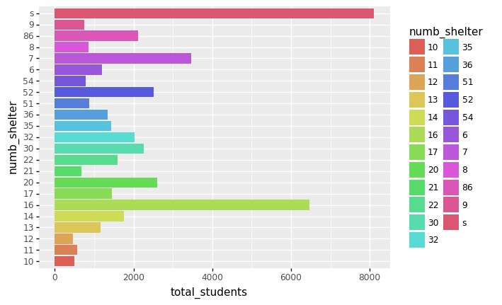
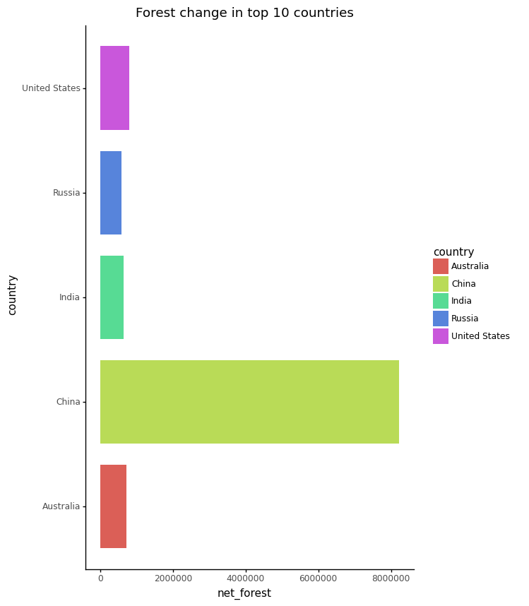
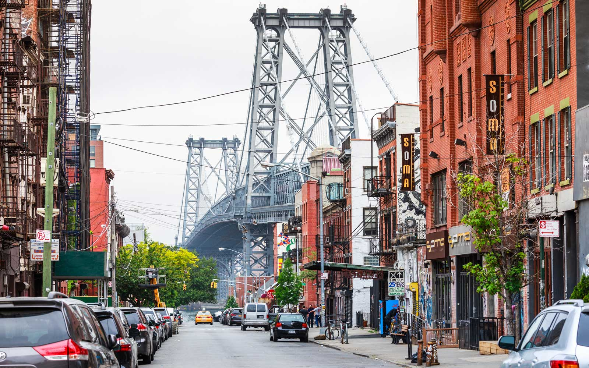

Samples of projects and stories
April 2022, Columbia Journalism School
Shocking FOIA request delays
Data of completed from over 13,000 FOIA requests made to US Agencies across the country, show that some agencies are taking as long as 9 years to complete legal requests submitted to those agencies. Analysis of requests submitted between 2018 to 2022 shows that out of some 39,100 over the period show 13,000 were completed, but not all completions were in good time, with some taking as long at 9 years. Full StoryApril 2022, Columbia Journalism School
China's impressive afforests record
China ranks number one in the world for its impressive forest conversion over a 30 year period. Data Analyzed from the United Nations Food and Agricultural Organization, FAO, shows China converted about 8million hectares of forest cover over the period, making it the country with the largest percentage of forest expansions despite a continuous rise in deforestation across the world Full Story

April 2022, Columbia Journalism School
A Demo of responsiveness
This uses graphics of college students in temporary housing, crashes data of New York City to demonstrate responsiveness in ai2Html. This is a Data Studio for class project 3 Using college students in temporary housing data and graphics to demonstrate responsiveness in ai2Html.Crashes in Brooklyn, have overshadowed those of Queens, Manhattan, Bronx and Staten Island in a latest dataset of citywide crashes between 2016 and 2021. Number of college students in temporary housing on the rise. Number of students home schooled increases across New York city Full Story

April 2022, Columbia Journalism School
Demo responsiveness
Demonstration of a responsive web development with scrollytelly, using China's aforestation record. China converted about 8million hectares of forest cover over a 30 year period, making it the country with the largest percentage of forest expansions despite globally. China’s success in expanding its forests is attributable to polices implemented since 1990 that have seen the planting of over 4million hectares of forest every year, through 6 national forestry programs Full StoryMarch 2022, Columbia Journalism School
Yam prices Ghana on a 5-year low
Prices of yam in Ghana have seen a consistent drop over the past 5 years, although yam has the second highest production levels of any food crop in Ghana over the past 50 years. A World Food Program crop prices data for Ghana indicates the steepest drop in the largest cultivation region of Brong Ahafo, occurred between July and August of 2017. During the period, prices dropped from as high as 1,016 ghc in July to a low of 226 ghc per 100 tubers of yams, which translates averagely to a drop from 10ghc per tuber to about 2ghc over the period. Full Story

February 2022, Columbia Journalism School
You are more likely to crash in Brooklyn
You are more likely to have car crash in Brooklyn than anywhere else in New York city. If you live in New York City and drive in your private car instead of public transport, you are more likely to have a car crash in Brooklyn than anywhere else in the city. Crashes in Brooklyn, have overshadowed those of Queens, Manhattan, Bronx and Staten Island in a latest dataset of citywide crashes between 2016 and 2021. Full StoryMarch 2022, Columbia Journalism School